带着kali一起走
本来想装arch的来着,久仰邪教大名
┏┛墓┗┓...(((m -__-)m,不愧是邪教ubuntu也搞了好久,但是没成功
所以在kali这碰碰运气
没想到啊,除了一点小问题,竟然成功了
这里贴上我参考的blog: https://blog.51cto.com/zdzhu/1574543
下面,就大致记录一下过程,以及问题的解决
准备工作
- kali镜像: 墙裂建议清华镜像站
- vm: 去官网找一下吧,我的是15的
- U盘: 我用的是SanDisk32G的
U盘的处理
这是我自己瞎鼓捣出来的,所以我不确定有什么后果,虽然最终是成功了的
经过
就在我愉快的进行到最后一步时
在SCSI3(0,0,0)(sda)设备的第1分区上创建ext4文件系统失败
To be continue……
然后,我寻思着,整个安装过程都没什么我可以瞎几把乱点的地方
然后我看看因为装arch,装ubuntu,格式化了2次的U盘
再看看报错说: 创建ext4文件系统失败
在格式化U盘时,一直是默认的fat32文件系统
我觉得我可以换一种试试,比如exfat
然后意外的成了!!!
格式化
此电脑
在U盘处右键,选择格式化
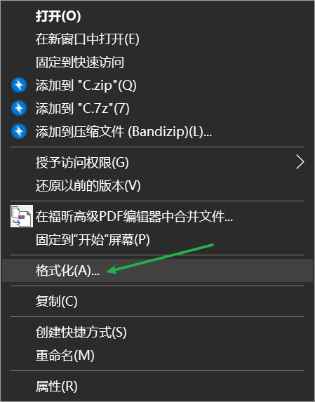
设置文件系统为exfat
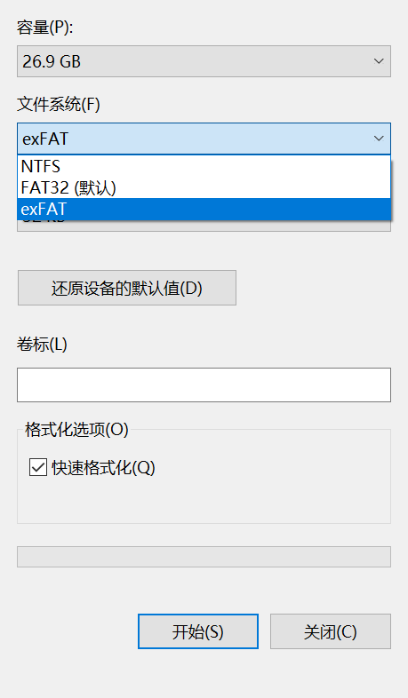
创建虚拟机
创建新的虚拟机,选择典型
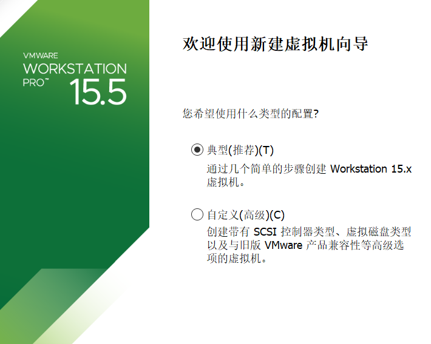
选第二个,浏览找到你所下载的镜像文件

linux,版本我就乱选了><
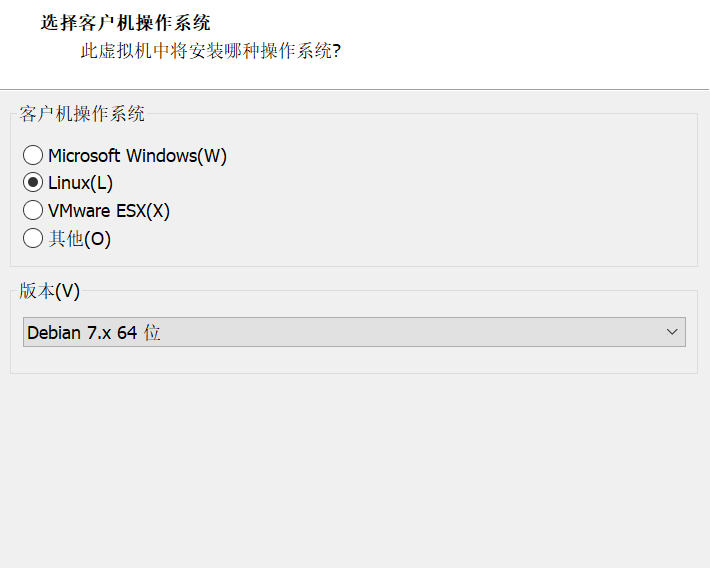
你可以给你的虚拟机取一个好听的名字,放在一个你能找到的位置
毕竟它命不久矣

分配磁盘空间,这里可以乱搞

这样就好了
虚拟机的配置
- 单击“编辑虚拟机设置”

- 选择硬盘，然后单击下面的“移除”，然后单击“确定”。

装系统进U盘
这里我是粘贴了上面记载的博客的内容
然后针对我和他不一样的地方进行注释
- 将U盘或者移动硬盘插到PC上
- 在Vmware中运行刚刚创建后的虚拟机。
- 虚拟机运行后单击右下角的移动设备挂载按键，如下红色框所示。
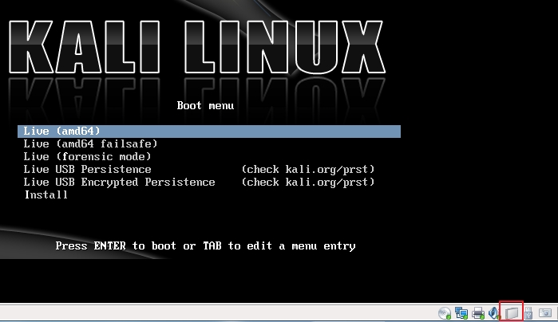
- 选择如下红框内容。
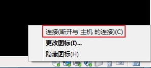
- 在下面弹出的对话框中单击确定，此时移动设备会挂载到虚拟机下，Windows下将暂时看不到这个设备。
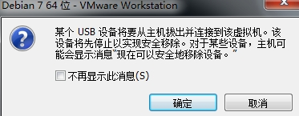
- 选择图形化安装Kali。然后按回车键。
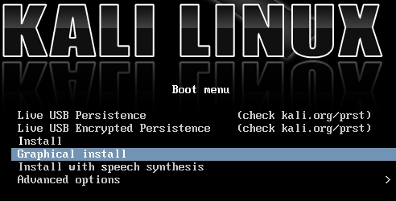
- 步骤6结束后会让你选择系统语言、键盘语言、主机名、root密码等
注意!!!
第7步,键盘语言,务必选择英语(美国)
我好像选错了,选成英语(英国)了,结果有些按键对不上
eg:@—>","—>@, #—>一个我打不出来的东西
如果选错了,可以拉到下面的问题处
第8步,我的和那个博客的大佬的不大一样,没有第一个选项
所以直接使用默认,即向导 - 使用整个磁盘
- 设置完root密码后，安装界面最后会停到“磁盘分区”界面如下。这里建议选择默认“使用最多的连续空闲空间”。然后单击继续。
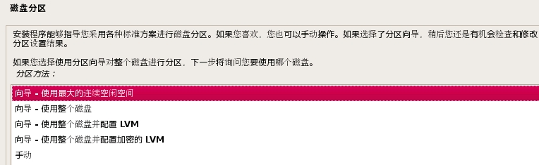
- 这里会发现你的移动设备被扫描到了。建议大家选择“将所有文件放在一个分区中”。
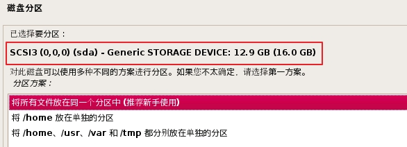
- 系统会自动给您创建一个分区，如下。选择“分区设定结束并将修改写入磁盘”。此时正式的安全就开始了。时间估计在20分钟左右。
在此过程中还会让设置几个选项，一个是“网络镜像”建议选否，一个是“将GRUB启动引导器安装到主引导记录（MBR）上，一定选“是”。
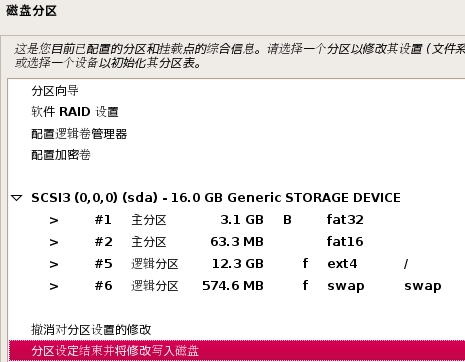
- 安装完成后单击“继续”此时系统会重启，由于Vmware重启后不会自动挂载移动设备，所以无法进入到刚刚安装完毕的系统中。不过此时已经不重要了，因为系统已经安装到移动设备中。单击“关闭客户机”关闭虚拟机。然后拔下移动硬盘或者U盘，快去重启PC然后选择USB启动试试，看看是否OK！

使用
贴上自己的使用经历
如果不放心的话,可以先选择虚拟机那个
毕竟”虚拟机”,听着就很安全: )
电脑
自己的电脑舍不得用,所以把家里的超级老电脑(ThinkPad)搬了出来
开机
狂按f12
选择usb
然后等就行了
这一等就是五六分钟……我都在自己笔记本上开始搜: U盘启动系统卡在初始页面咋办
不知道是电脑老还是系统在U盘里的原因,开机速度很慢,
使用的话,比那台老电脑使用win7的时候好点,这是不是说明,我用一台好电脑就行了?
emmm,试了一下我自己的笔记本(Asus),哇,简直了
我本来以为和老机一样,直接就可以进了,没想到从f2/esc/f7/f8/f12,tmd一个个按了个遍
就是没找到U盘启动项在哪里><
- 第一次使用的小伙伴要开机按f2进入bios
- 进入security选项卡,security boot menu,然后点击secure boot control,把改为disabled
- 进入boot选项卡,把CSM的什么东西(全称记不住了,反正只有一个),改为enable
- f10保存退出
- 开机按f12进入选择启动项,这时候就有别的选项了,选择自己的U盘,ojbk
开机比上面的老电脑好多了,至少不会有种完了进不去了的感觉
使用速度确实比较慢,U盘还是限制了发挥
虚拟机
新建虚拟机,选择自定义
过
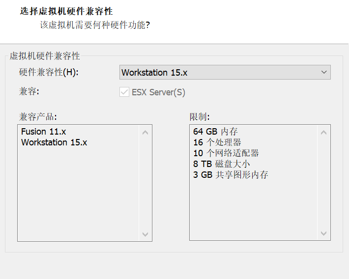
稍后安装操作系统

取名和选择版本(随便啦)

名称位置(还是随便)

使用物理磁盘
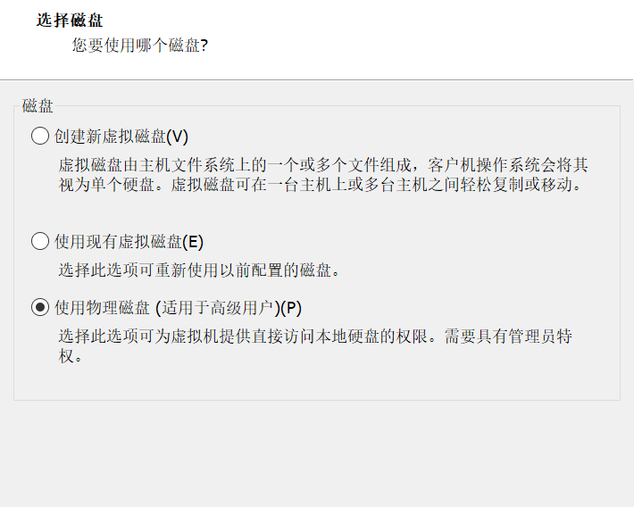
选择自己U盘的那个设备

后面就没啥了
虚拟机是在我的电脑中开的,很流畅,说明确实是电脑问题
不过开机和我直接装在虚拟机上的kali比,慢了不少
日常使用,emmm,用的不多还没感受出来
问题
记录我在配置kali时遇到的问题
键盘映射有问题
打开设置界面
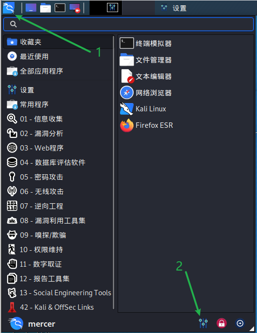
键盘

在布局中,加入英语(美国),移到最上面,其他删了还是放着随意

记得重启
command not found
就在弄上面的键盘时,用到了重启
所以我试着输入了reboot
oho,没用
echo $PATH查看一下,路径里有啥,确实没有/sbinexport PATH=$PATH:$HOME/bin:/sbin:/usr/bin:/usr/sbin增加一些路径
因为路径里存放着,我们所用到的命令
从本质上来说,我们所使用的命令就是一个个程序,他们被存放在某个地方
我们在终端中使用命令时,会从路径中找到那个程序
我们的情况就是,我们没告诉他路径是什么,所以他找不到
因此,如果我们知到放在哪里,就可以直接去使用
eg: reboot 在/sbin 里,所以我们可以使用/sbin/reboot 来重启
tips
一些方便使用的,提升使用舒适度的小tip
快捷键
ctrl+alt+t 打开终端
halt 关机
reboot 重启
firefox字体太小
如果在菜单–>缩放那里搞的话,只要换个选项卡就又那么小了,所以要来一个一劳永逸的

about:config会跳出这么一个界面
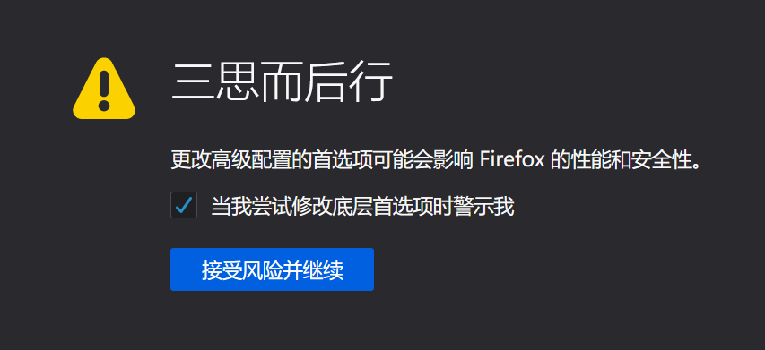
当然选择接受风险啦
搜索
layout.css.devPixelsPerPx把默认的
-1,调成1.51.5即150%,可以由着你们自己的感觉调整
该页面不会变,但是你可以去别的页面看看